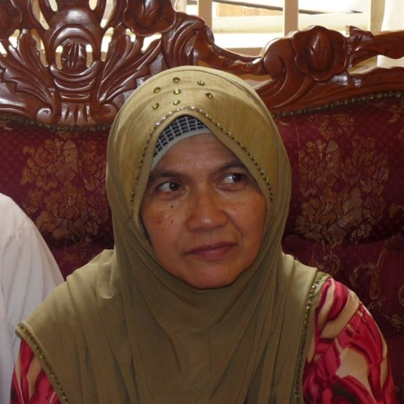
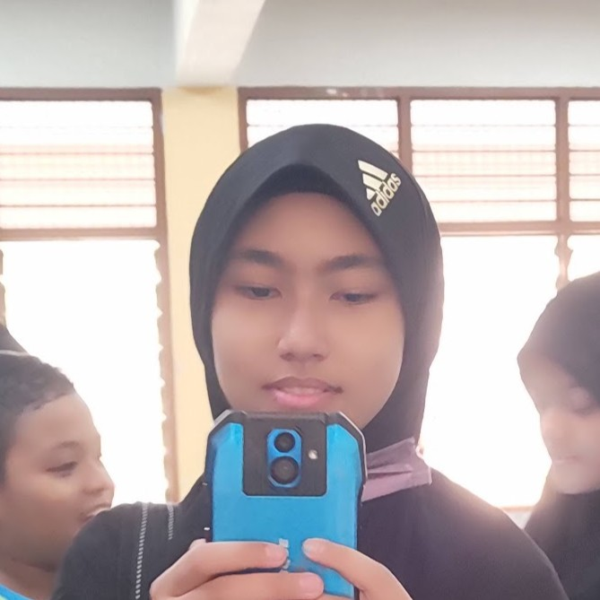
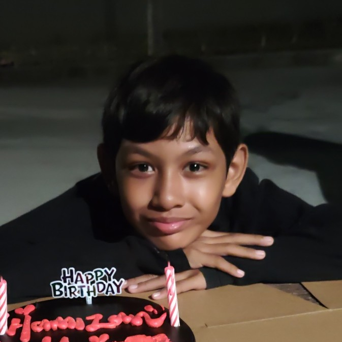

Family
My Family
My family is my biggest support system. We love spending time together, especially during holidays and weekends when we sometimes go out for meals or 4x4 offroad trips. They have always encouraged me in my studies and hobbies.
Parents
Hussain B Yusoff
Father

Siti Hajar Bt Abu Bakar
Mother
Wife
Nur Shazwani Binti Ali
Wife
Children

Nur Sakinah Binti Muhamad Nasrul
Child

Ahmad Hamizan Bin Muhamad Nasrul
Child
Ahmad Hafizan Bin Muhamad Nasrul
Child
Disclaimer: This website is developed for IML254 Individual Project. All content is for educational purposes only.
Recommended browser: Google Chrome / Microsoft Edge
Recommended resolution: 1366 × 768 and above
Last updated: 10 June 2026
Copyright: © 2026 Muhamad Nasrul Bin Hussain. All rights reserved.